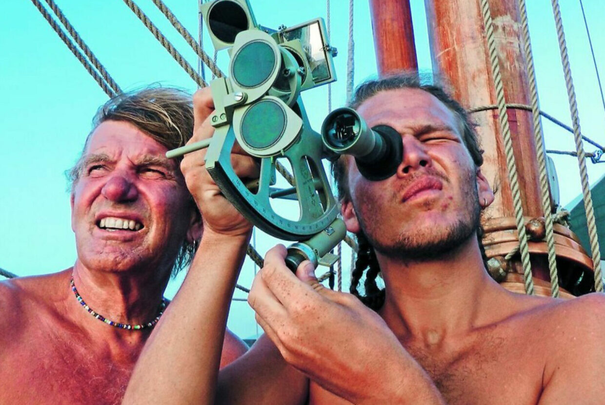
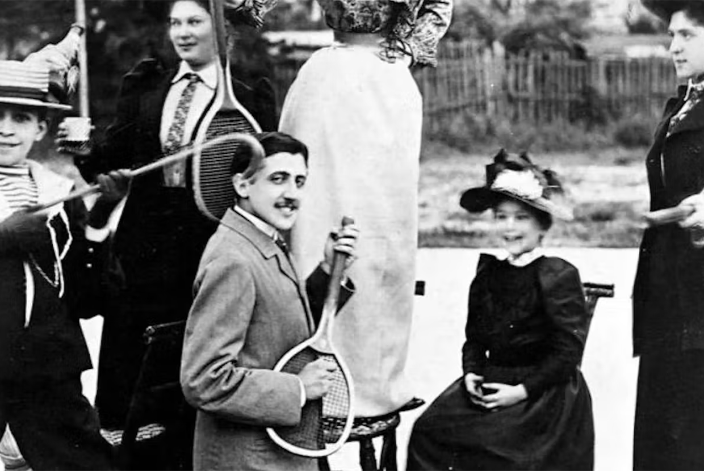
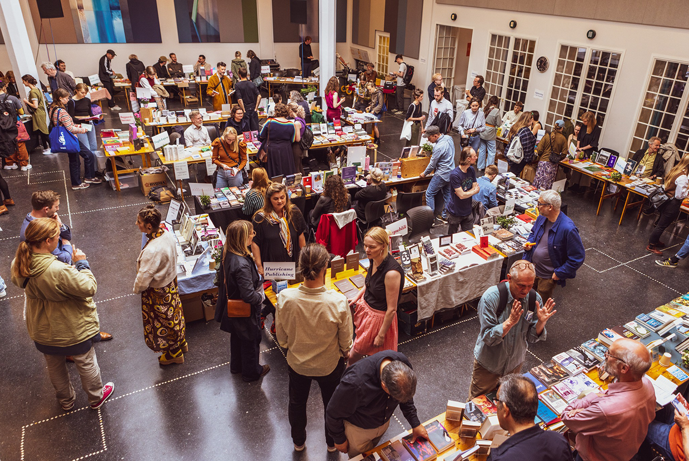

På Johan Borups Højskole har vi syv kunstneriske linjer med undervisere,
der alle er aktive kunstnere. Johan Borups Højskole er et hjem og en tryg
ramme, hvor vi møder hinanden som hele mennesker.
Vores smukke hus ved Frederiksholms Kanal, midt i København, er et pulserende mødested
for alle slags mennesker. Vi blander os i det københavnske kulturliv, vi debatterer, vi
har en aktivistisk tilgang til vores projekter og vi dyrker sport i byen. Vi stiller krav
til hinanden, for vi er trygge ved hinanden og synes, at det er OK at fejle.
“Her på højskolen ser vi det nordiske som en måde at være forskellige på – ikke en måde at være ens på.”
Forfatterens værktøj er sproget, ligesom malerens værktøj er pensel og lærred, og danserens værktøj er kroppen.
På Johan Borups Højskole får du skærpet dit sprog og dine virkemidler, du prøver kræfter med forskellige udtryk
og du vil opdage, at din litterære stemme har meget større spændvidde, end du måske tror.
“Al kunst handler om eksistens, hvad det vil sige at være menneske.”
Events
Det sker i kulturhuset

FOLKELIG FORELÆSNING - EMIL MIDÉ ERICHSEN: SKØNHEDEN
TORSDAG D. 17. NOV. 2022 KL. 16.30-18.00
Kom og oplev den første i rækken af Emil Erichsens folkelige forelæsninger:
EVENTYRET. Om at gøre sine drømme til virkelighed.

KONCERT OG OPLÆG: EN MUSIKALSK FEJRING AF MARCEL PROUST
ONS. 23. NOV. KL. 19.30-21.00 2022
En musikalsk fejring af Marcel Proust i anledning af 100 året for hans død.

BOGHYLDEST LILLE BOGDAG
LØR. 13. + SØN. 14. MAJ 2023
Lille Bogdag for 8. gang! Vær med til en uformel hyldest af alle de fantastiske bøger,
der i disse år ser dagens lys på mindre, danske kvalitetsforlag.